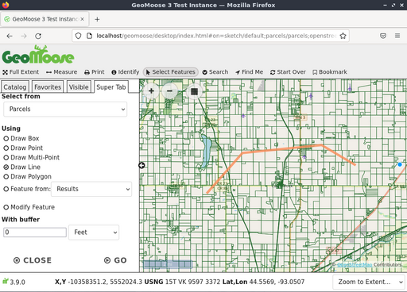

Guida rapida GeoMoose¶
GeoMoose è un framework di mappatura basato su browser per la visualizzazione di dati cartografici distribuiti. È particolarmente utile per gestire i dati spaziali e non spaziali all’interno degli uffici di contea, città e comuni (da cui GeoMoose ha avuto origine).
GeoMoose è un framework per la gestione di portali di dati GIS. La versione installata di GeoMoose sul DVD Live è una configurazione di esempio che visualizza un set di layer di esempio.
Contenuti
Avvia GeoMoose¶
Vai alla cartella «Browser Clients» sul desktop.
Clicca sull’icona del desktop «Start GeoMoose». Questo lancerà il browser predefinito che navigherà automaticamente alla posizione corretta.
Ti verrà presentata una pagina web che mostra un’interfaccia demo di un’istanza di GeoMoose.

Le interfacce presentate sopra mostrano:
Una barra per i banner
Una barra degli strumenti
Una finestra di mappa con controlli di navigazione e zoom
Un menu laterale con:
Un elenco a discesa di località «Vai a»
Schede di controllo che iniziano con «Catalog», per visualizzare la lista dei layer. Se necessario, appariranno altre schede: una lettura «Information», una scheda di uscita «Custom» e altre.
Una barra di piè di pagina con:
Letture multiple di coordinate, una per: X, Y (coordinate locali del set di dati), LAT/LON (decimale) e United States National Grid (USNG)
Un elenco a discesa modificabile per una scala di vista da scegliere o definire.
Identifica una posizione¶
Clicca sul pulsante «identifica» («i» in un’icona circolare) nella barra degli strumenti superiore
Clicca su un punto della mappa.

Il catalogo lungo il lato sinistro della vista Mappa cambierà in «Super Tab» - un posto dove GeoMoose mostra i risultati di un’azione o chiede maggiori informazioni. In questo caso, mostrerà i risultati di una query di ogni layer attivo e identificabile per il punto che hai cliccato nella mappa.
Usa lo strumento di misurazione¶
Lo strumento di misura di GeoMoose permette di: * misurare un punto (restituisce le coordinate di un punto scelto) * misurare la distanza lungo una linea potenzialmente multi-segmento * misurare l’area di un poligono.
Clicca l’icona della doppia freccia finita nella barra degli strumenti superiore per avviare lo strumento di misurazione.
Scegli di misurare un punto, una linea o un poligono.
Clicca sulla mappa dove vuoi misurare. Per misurare un punto, basta cliccare sul punto della mappa che si vuole misurare. Per misurare una linea o un poligono clicca sulla mappa per ogni vertice a della linea/poligono.
Doppio clic per terminare la linea/poligono.


Nota
puoi anche misurare un elemento preesistente sulla mappa (se proviene da un layer vettoriale, compresi i risultati di query precedenti) senza doverci tracciare manualmente sopra.
Seleziona gli elementi¶
È possibile selezionare gli elementi da un Punto, Linea, Poligono, o da un elemento esistente. Per iniziare, clicca sull’icona «Select Features» (icona del cursore del mouse), scegli punto, linea, poligono e inizia a disegnare la tua selezione nella mappa. Puoi fare doppio clic sull’ultimo punto per finire il processo di disegno. Se vuoi aggiustare la tua selezione puoi farlo con l’opzione «Modify Feature».
Hai anche l’opzione di selezionare gli elementi basati su una versione bufferata di ciò che hai disegnato. L’impostazione predefinita è il buffer di «0» che non fa nulla. I valori positivi espandono ciò che hai disegnato di quella distanza, i valori negativi restringono il tuo disegno.
Seleziona il layer da cui si desidera selezionare gli elementi usando la casella di selezione «Query Layer». Nota: non tutti i layer possono essere utilizzati con lo strumento Seleziona elementi. Per essere disponibile per la selezione, un layer deve essere un layer vettoriale ed essere configurato per la selezione nel mapbook.

You may need to scroll down in the «Super Tab» to find the «Go» button if your browser window is small.

Infine, clicca sul pulsante «Go» per selezionare effettivamente gli elementi. GeoMoose restituirà un riassunto di ciò che è stato selezionato anche nella Super Tab, evidenzierà gli elementi selezionati sulla mappa e mostrerà una tabella degli attributi degli elementi selezionati.

Se passi il mouse su una linea nella tabella, l’elemento corrispondente sulla mappa sarà evidenziato. Inoltre, puoi usare le icone a imbuto nell’intestazione della tabella per filtrare ulteriormente i risultati, e usare le icone a triangolo nell’intestazione della tabella per ordinare i risultati. I risultati possono essere scaricati come file CSV utilizzando l’icona di download in alto e a sinistra della tabella.
Ricerca di elementi¶
Puoi anche cercare gli elementi per attributo. Per iniziare, passa sopra il menu «Search» nella barra degli strumenti e poi clicca sull’icona «Search Parcels». Inserisci i tuoi parametri di ricerca nella Super Tab e poi clicca sul pulsante «Go!».

La seguente schermata mostra una ricerca di tutti i proprietari di pacchi che contengono il nome «frank».

Tre risultati appaiono nella lista e sono evidenziati sulla mappa.

Cliccando sull’icona della lente d’ingrandimento/numero di parcella, si accede alla parcella specifica come illustrato nella seguente schermata.

Stampa la mappa¶
La prossima schermata mostra come appare lo strumento di stampa fornito con la demo di GeoMoose. Quando si clicca sullo strumento di stampa, appare una finestra di dialogo che chiede un titolo per la mappa stampata, le dimensioni e la rotazione della pagina, la risoluzione di stampa, e mostra un’anteprima di ciò che verrà stampato.

Facendo clic sul pulsante Stampa nella finestra di dialogo verrà generata una stampa PDF che sarà possibile aprire o salvare.

E ora?¶
Questo è solo il primo passo sulla strada per usare GeoMoose. Ci sono molte altre funzionalità che puoi provare.
Sito web del Progetto GeoMoose
Tutorial GeoMoose